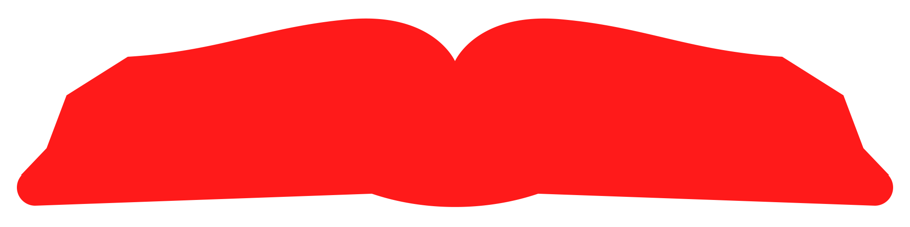
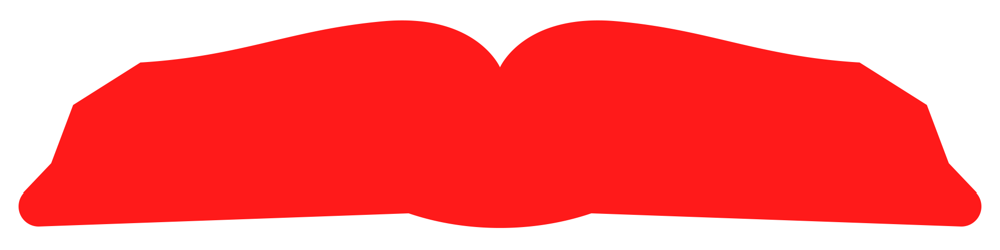

/Around the World
/Around the World

people have been born
267 per minutepeople have died
120 per minute
people have stubbed their toe
15,700 per second
people have sneezed
115,000 per second
Humans have killed
0sharks
6 per second
Humans have used
0liters of freshwater
0 gallons 136,000,000L per second
newspapers have been thrown away
761 per secondmagazines have been thrown away
11 per second 
books have been thrown away
3.8 per minute
children have gone missing
15 per minute
kilometers of road has been built
0 miles 2.3km per minuteVehicles have collectively driven
0kilometers
0 miles 1,160,000km per secondHumans have collectively walked
0kilometers
0 miles 343,500km per second
Humans hearts have collectively beat
0times
9,600,000,000 per secondHumans have collectively breathed
0times
2,000,000,000 per second
Humans have collectively blinked
0times
2,000,000,000 per secondHumans have collectively yawned
0times
700,000 per secondpeople have hit snooze
127,000 per second
tonnes of food has been wasted
0 tons 37.4t per second
books have been published
252 per hourcars have been manufactured
2.9 per secondpackages have been shipped
12,900 per second
aircraft have taken off
153 per minuteairline flights have taken off
76 per minute

airline flights have been canceled
110 per hour
Humans have collectively spoken
0words
0 books 1,200,000,000 per secondConsumers have spent
0USD globally
1,400,000 USD per secondBibles have been printed
152 per minutepeople have contracted a cold
1,600 per secondpeople have contracted a mosquito-borne illness
22 per secondpeople have contracted pneumonia
14 per second
people have died from pneumonia
7.6 per minutenew businesses have started
95 per minuteThere have been
0weddings
80 per minuteThere have been
0divorces
14 per minuteThere have been
0traffic accidents
17 per minutepeople have been injured in a traffic accident
8 per minutepeople have died in a traffic accident
11 per hourMore Streams


This stream shows how many things are happening all around the world RIGHT NOW! This stream includes:
The amount of people who are born every minute (about 267)
The amount of people who die every minute (about 120)
The amount of people who stub their toe every second (about 15,700)
The amount of people who sneeze every second (about 115,000)
The amount of sharks humans kill every second (about 6)
The amount of water humans use every second (about 136,000,000 liters)
The amount of newspapers thrown away every second (about 761)
The amount of magazines thrown away every second (about 11)
The amount of books thrown away every minute (about 3.8)
The amount of children who go missing every minute (about 15)
The amount of road built every minute (about 2.28 kilometers)
The distance vehicles collectively drive every second (about 1,160,000 kilometers)
The distance humans collectively walk every second (about 343,500 kilometers)
The amount of collective human heartbeats per second (about 9.6 billion)
The amount of collective human breaths per second (about 2 billion)
The amount of collective human blinks per second (about 2 billion)
The amount of collective human yawns per second (about 700,000)
The amount of people hitting snooze per second (about 127,000)
The amount of food wasted every second (about 37.4 tons)
The amount of books published every hour (about 252)
The amount of cars manufactured every second (about 2.9)
The amount of packages shipped every second (about 12,900)
The amount of aircraft taking off every minute (about 153)
The amount of airline flights taking off every minute (about 76)
The amount of airline flights canceled every hour (about 110)
The amount of words humans collectively speak every second (about 1.2 billion)
The amount of money consumers spent globally every second (about 1.4 million)
The amount of Bibles published every minute (about 152)
The amount of people who get a cold every second (about 1,600)
The amount of people who contract a mosquito-borne illness every second (about 22)
The amount of people who get pneumonia every second (about 14)
The amount of people who die from pneumonia every minute (about 7.6)
The amount of new businesses started every minute (about 95)
The amount of weddings every minute (about 80)
The amount of divorces every minute (about 14)
The amount of traffic accidents every minute (about 17)
The amount of injuries from traffic accidents every minute (about 8)
The amount of deaths from traffic accidents every hour (about 11)